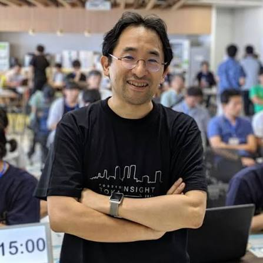

MON
14:00 START ／ 13:30 OPEN名古屋大学 野依記念学術交流館
ご挨拶

いつも、大変お世話になっております。
河口研(UCLab)も、河口が2000年10月に名古屋大学大型計算機センター 助教授（工学研究科情報工学専攻 併任)になって以来26年, 2009年6月に教授になって15年以上が経過し、卒業・修了生も100名を超える規模になりました。
また、2015年12月に設立されたTIER IV社（河口は設立当時は取締役として参加）も、2026年7月に無事にIPOを果たしました。 この機会に、皆様にこれまでのご愛顧への感謝を込めて、 河口研の現在を紹介する講演、デモ・ポスター、研究室OBOGのパネルトークを開催し、 また、ささやかながらのパーティを開催します。ぜひともご参加ください。
学外の皆さまもご参加いただけます。
名古屋大学未来社会創造機構 教授 河口信夫
開催概要
- 日時
- 2026年12月14日（月）14:00〜13:30 受付開始 ／ 20:00 中締め予定
- 会場
- 名古屋大学 野依記念学術交流館
- 参加対象
- 学外・一般の方もご参加いただけます
- 参加費
- 河口研関係者（OB/元スタッフ/招待者）：完全無料。
一般参加者：講演会のみは無料。懇親会は3000円を申し受けます。 - 主催
- 河口研究室
プログラム
2026.12.14 MON
13:30
受付開始
-
14:00〜 16:00
ポスター＋デモンストレーションセッション
- 研究成果展示
- 研究室発企業ブース
- 協力企業ブース
-
16:00〜 17:30
講演セッション
- 河口 信夫「現実世界へのアプローチ：30年間のあゆみとこれから」
- 米澤 拓郎「Internet of Realities：IoTの先へ、人々の相互理解へ向けて」
- 浦野 健太「私が見てきた河口研究室の12年」
17:30〜 18:00
研究室OBOG パネルトーク
18:00〜
懇親会
20:00
中締め
参加登録
河口研オープンラボ2026
学外の皆さまのご参加もお待ちしています。
参加登録フォームへ ↗
外部のGoogleフォームへ移動します。